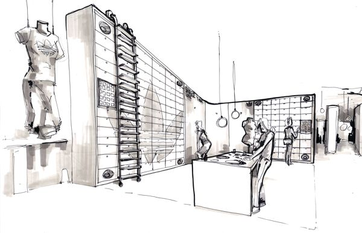
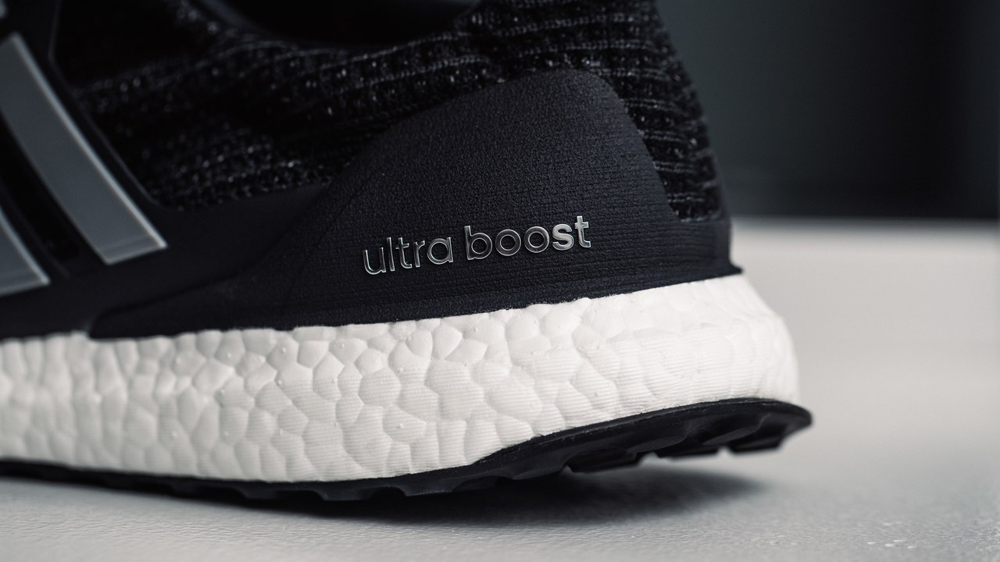
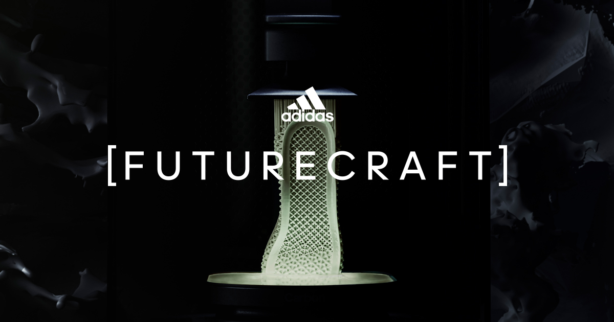

Brand Overview
Usually seen as the second largest sneaker brand in the world behind Nike, Adidas is valued at around $16.7 billion. Although the brand started off being well known for its tennis sneakers, Adidas also evolved into a top brand in creating sneakers for other sports such as basketball and soccer. Adidas is also incredibly popular in pop culture due to its collaborations with music artists such as Kanye West.
Notable Technologies
BOOST
A revolutionary sneaker cushioning innovation. Adidas' BOOST technology is a lightweight foam that can be compressed when under pressure and bounce back to its original form instantly. It offers the highest energy return for running sneakers.
4D
The 4D technology by Adidas is a midsole that is created solely by 3D printing. This technology allows a midsole to be created around an athelete's specific needs. Simple programming with 4D can create a midsole that balances the cushioning and stability for a specific sport.